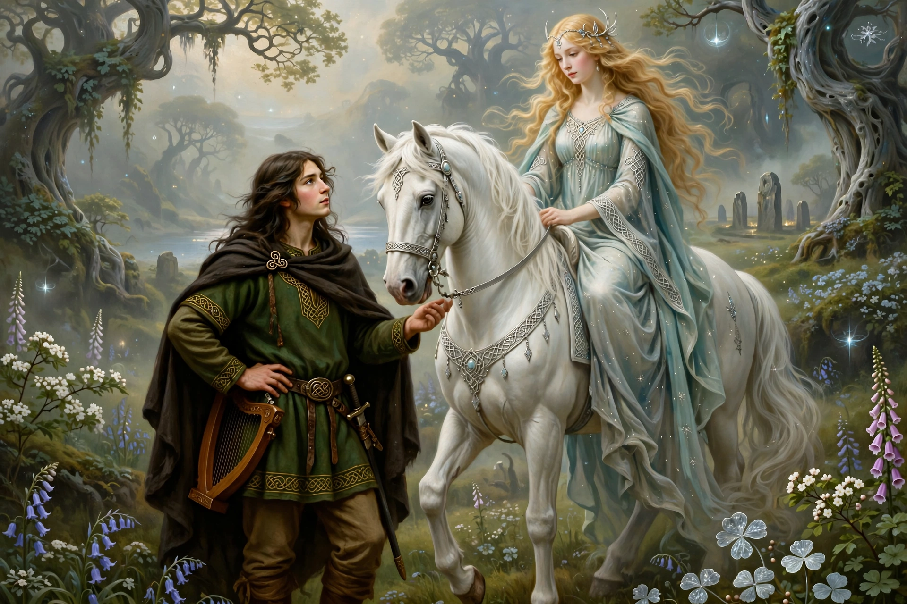

Oisín (pronounced roughly “uh-SHEEN”), also spelled Ossian, is a legendary Irish hero, warrior and poet of the Fenian Cycle of Irish mythology. He is the son of the hero Fionn mac Cumhaill and the goddess-turned-deer Sadb, leader and chronicler of the Fianna.

His name means “little deer”: his mother Sadb, transformed into a deer by the druid Fer Doirich, bore him in animal form, and Fionn found the child on Benbulben. Oisín grew to become the Fianna's great poet, and most Fenian tales are framed as his narration.
In the best-known tale, the immortal Niamh of the Golden Hair came from Tír na nÓg, the Land of Youth, and took Oisín there as her husband. After what seemed three years — in truth three hundred — homesickness drove him to visit Ireland on a magical white horse, warned never to dismount. Finding his world vanished and St Patrick's Christian Ireland in its place, he fell from the horse while helping men lift a stone, instantly aged three centuries, and died after recounting the Fianna's deeds.
In the 1760s James Macpherson published the purported epics of “Ossian”, claiming to translate ancient Gaelic verse by Oisín; the works swept Europe, influencing Goethe and Napoleon, though their authenticity was fiercely disputed. W. B. Yeats's early long poem The Wanderings of Oisin (1889) retells the Tír na nÓg journey. Oisín remains a central figure of the Fenian Cycle alongside tales preserved in the Acallam na Senórach.
Recreated from memory.